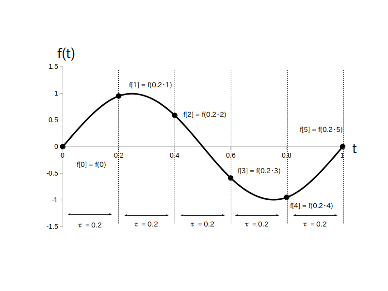

「サンプリング」とはアナログ時間領域信号 $f(t)$ の値をある間隔ごとに飛び飛びに取り出してディジタル時間領域信号 $f[i]$ に変換する処理のことで「標本化」とも言います。
「サンプリング」も「標本化」も良く使われる単語なのでどちらか好きな方を使って良いです。
このサンプリングを行う間隔は、前のテキストに書いたように等間隔で無くても良いのですが、普通は等間隔でサンプリングを行います。
さて実際にサンプリングを説明する前に、いくつか事前に覚えておいて欲しい用語と公式を挙げておきます。
・ サンプリング周波数 $f_s$ ・・・ アナログ信号 $f(t)$ に対して $1$ 秒間に何回サンプリングするかを表す正の整数値、単位は Hz(ヘルツ)
・ サンプリング角周波数 $w_s$ ・・・ $f_s$ を角周波数に変換した値、単位は rad/秒(ラジアン毎秒)
・$w_s = 2\pi\cdot f_s$ の関係がある
・ サンプリング間隔 $\tau$ (タウ) ・・・ $f(t)$ に対して何秒おきにサンプリングするかを表す正の実数値、単位は 秒
・ $\tau = 1/f_s$ の関係がある
例えば $f_s = 10$ (Hz) だとすると $f(t)$ の値を $1$ 秒間に $10$ 回サンプリングして取り出す事を意味しますので、その間隔は $\tau = 1/10 = 0.1$ (秒)ということになります。
では、これを踏まえてサンプリングの仕方をステップに分けて説明していきます。
そもそも アナログ時間領域信号$f(t)$ が無いと始まらないので、まずサンプリング対象の $f(t)$ を選びます。
次にサンプリング周波数 $f_s$ (Hz)を決めます。
この値はユーザがシステム要件等から自分で決める必要があり、大きくしても小さくしてもそれぞれメリット・デメリットがあります。
なお $f_s$ (Hz)を決めたらサンプリング間隔 $\tau$ (秒)は上で示した公式($\tau = 1/f_s$)から自動的に決まります。
次に $i$ の範囲を決めます。
$i$ は整数値でしたので、$i=0,1,2,\cdots$ の様に $i=0$ からサンプリングを開始し、最大値 $i_{\textrm{MAX}}$ まで来たらサンプリングを停止します。
この $i$ の最大値 $i_{\textrm{MAX}}$ は $f(t)$ を何秒間サンプリングするかによって決まります。
$1$ 秒間に $f_s$ 回サンプリングしますので、 $\textrm{T}_s$ 秒間サンプリングするとしたら $i$ の最大値は $f_s \cdot \textrm{T}_s$ になります。
ただし $f_s \cdot \textrm{T}_s$ が整数値でない時は、その値を超える最小の整数値を $i$ の最大値 $i_{\textrm{MAX}}$ にすることに今回はします(※)。
※ 例えば $f_s = 10$で $\textrm{T}_s = 1.55$ なら $f_s \cdot \textrm{T}_s = 15.5$ なので $i_{\textrm{MAX}} = 16$
ちなみに$f_s \cdot \textrm{T}_s$の値を超えない最大の整数値を$i_{\textrm{MAX}}$にする場合もあります(システムの仕様による)。
$i$の範囲を決めたら、後は
\begin{align*} f[i] = f( \tau \cdot i ) \ , \ (i=0,1,\cdots、i_{\textrm{MAX}}) \end{align*}と $\tau$ 秒おきに $f(t)$ の値を $f[i]$ に代入していくだけです。
例えば図1は $f(t) = \sin( 2\pi \cdot t )$ を $f_s = 5$ (Hz)、$\tau = 0.2$ (秒) で $\textrm{T}_s = 1$ 秒間サンプリングしている状況です。
$\tau = 0.2$ 秒おきに $f[i]$ の値が取り出されている事に注目して下さい。
$i$ の範囲は $0$ から $i_{\textrm{MAX}} = f_s \cdot \textrm{T}_s = 5$ になります。
その結果図2の様な時間領域ディジタル信号が出来上がります。
